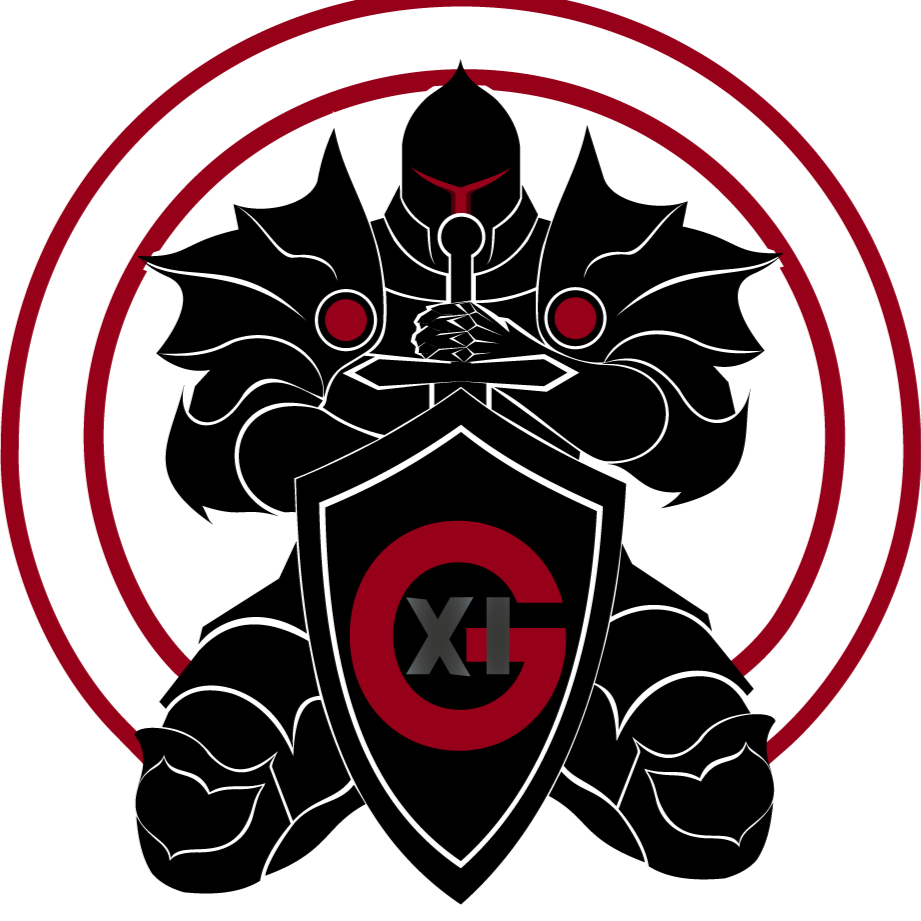
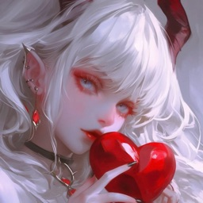

Roster Overwatch
Overwatch est un hero shooter compétitif en 5v5 développé par Blizzard. S'il s'agit du projet initial et fondateur de Nevermore, l'équipe compétitive est actuellement en retrait/pause.
Les Titulaires

Fawks
Le fondateur du projet. Après avoir passé un très long moment en première ligne sur le rôle de Tank, il a récemment transitionné pour diriger l'équipe depuis la backline en tant que Main Support.

Kalyani (Kaly)
Pilier de l'équipe et véritable force de frappe depuis la backline. Elle assure le maintien en vie du roster tout en punissant les erreurs adverses avec une efficacité redoutable.

LadyXMC (Lady)
La précision chirurgicale de l'équipe. Elle est chargée de contrôler les lignes de vue et de sécuriser les éliminations clés grâce à sa maîtrise des personnages hitscan.

ChatonRêveur
L'autre moitié de notre duo de dégâts. Il complète la ligne offensive en s'adaptant aux besoins de l'équipe et en mettant une pression constante sur les adversaires.
Place Vacante
Une place de titulaire est actuellement ouverte au sein du roster principal pour compléter notre cinq majeur.
Try Out & Remplaçants

BaiValOssé
Actuellement en phase de test (Try out) avec l'équipe pour potentiellement sécuriser la place de Tank principal et créer l'espace nécessaire à nos DPS.

Shig
Le couteau suisse du groupe. Étant moins disponible en raison de ses horaires de travail, il intervient comme joueur remplaçant de luxe, capable de flex sur les rôles de DPS et Support selon les besoins.
Staff Technique

Sawl_OW
Le cerveau tactique de l'équipe. Il est chargé de l'analyse des VOD, de la création des stratégies et de l'encadrement des joueurs pour maximiser le potentiel du groupe à haut niveau.